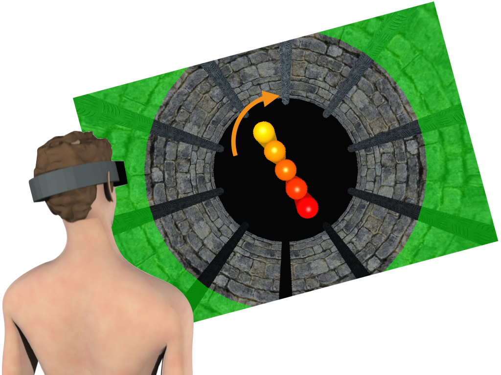

Step 4: Align to Remembered Target
With the left hand use the VR Headset Remote to align the virtual tool to the memorised target.

Note: Press and hold RIGHT and LEFT on the VR Headset Remote to rotate the virtual tool clockwise and counter-clockwise, respectively.
Press the Select Button on the VR Headset Remote to validate your response once you think that the virtual tool is aligned with the memorised target.